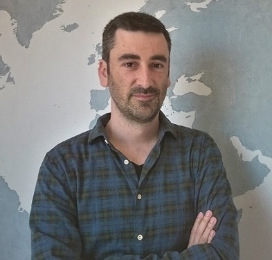

GRUP DE RECERCA D'ANÀLISI DE DINÀMIQUES D'ORDENACIÓ TERRITORIAL (GRADOT)
Equip investigador
El equip d'investigació GRADOT, és local, és a dir centrat i formalitzat per persones de Tarragona i voltants. En total, és troba format per 5 persones investigadores, persones responsables de l'Administració i estudinats del grau de Geografía, Anàlisi Territorial i Sostenibilitat de diversos centres investigadors:
- Ajuntament de Tarragona. Conselleria d'Urbanisme i Territori
- Universitat Rovira i Virgili. Departament de Geografía. Universitaris i titulats
- La mobilitat urbana, la transformació dels espais de la ciutat i els efectes sobre la dinàmica dels ciutadans
- Consell Comarcal del Priorat
Nacho García
Ajuntament de Tarragona
Conseller d'Urbanisme i Patrimoni
Albert Rovira
Universitat Rovira i Virgili
Universitari del grau de Geografia
Sergi Centelles
Universitat Rovira i Virgili
Universitari del grau de Geografia
Aaron Gutierrez

Universitat Rovira i Virgili
Professor al Departament de Geografia
Joan Vaqué
Consell Comarcal del Priorat
Investigador en desenvolupament rural